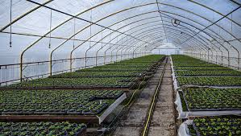
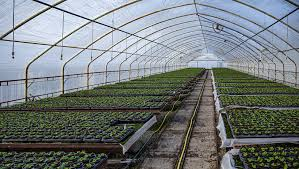
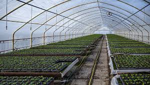

El PROGRAMA NACIONAL FORMACION EN AGROALIMENTACION, LES DA UNA CORDIAL BIENVENIDA A SU COMPLEJO EDUCATIVO VIRTUAL, PLATAFORMA TECNOLÓGICA QUE FOMENTA EL USO DE LAS NUEVAS TECNOLOGÍAS DE INFORMACIÓN Y COMUNICACIÓN A TODA NUESTRA COMUNIDAD UNIVERSITARIA.
